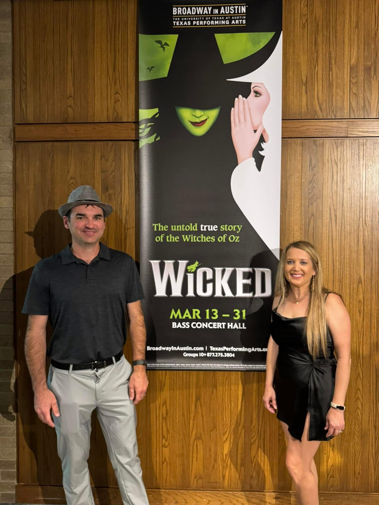
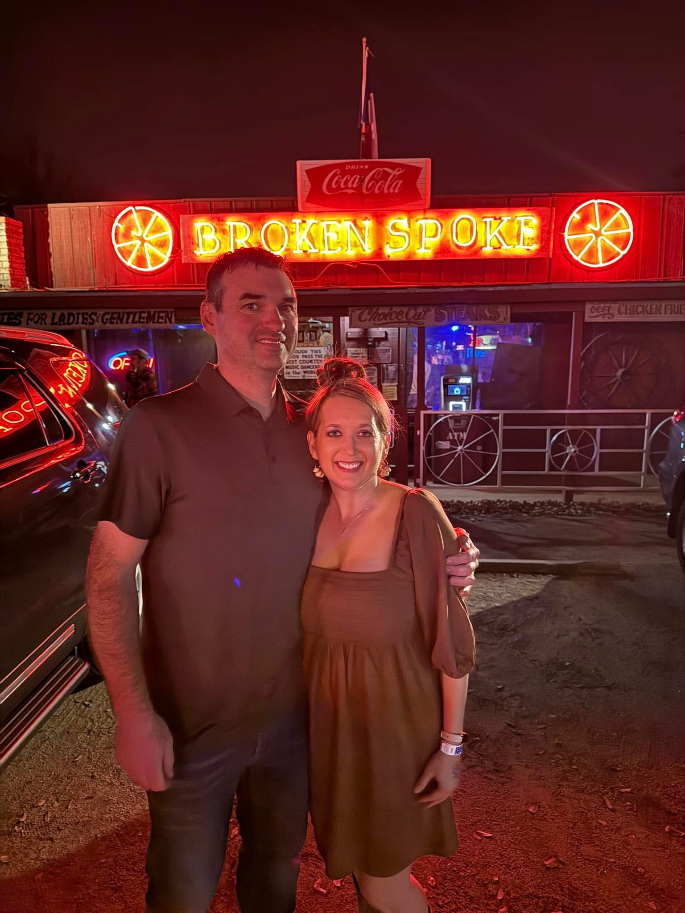
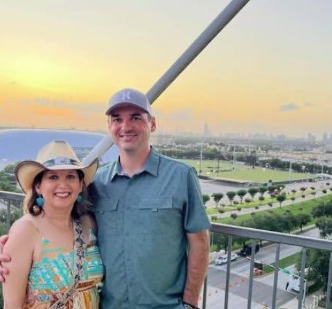
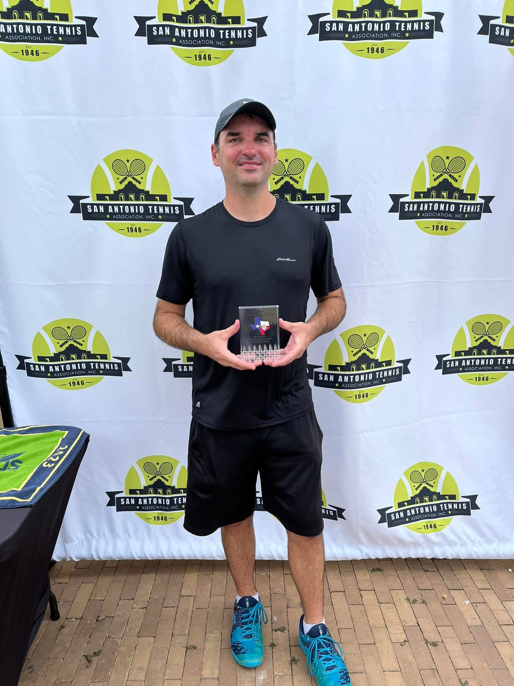
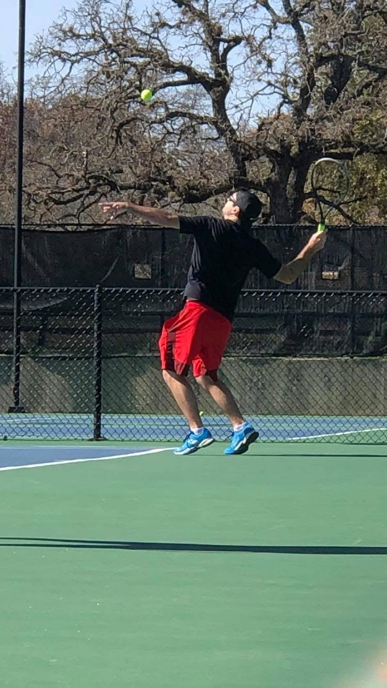
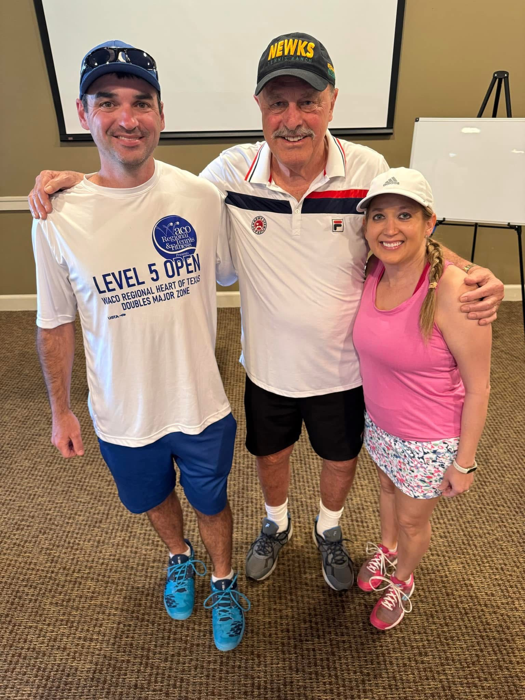

About Me
Tera and Me
Tera and I met in 2020 and got married in 2022. She has been one of the biggest blessings in my life, and I’m genuinely grateful for the life we’ve built together.
Since we both work from home, we get to share a lot of the day-to-day parts of life, not just the big moments. Most days that means working side by side, usually with Raider and Keo nearby doing their best to stay involved.
One thing we really enjoy is getting out and experiencing life together. Over the past several years, we’ve been to more than fifty concerts, which has become one of our favorite things to do.
We also spend time at local dancehalls country dancing and just enjoying the atmosphere. Whether we’re out doing something fun or relaxing at home, we try to make the most of our time together.



Our Dogs

Keo
Keo is a Chaweeny and one of our full-time office mates. He’s about seven years old and keeps things interesting during the workday.

Raider
Raider is a Chihuahua and the other member of the home office team. He’s about nine years old and takes his job very seriously.
Tennis



I’ve been playing tennis for about the past ten years and have traveled all over Texas competing in tournaments. While I wouldn’t describe myself as an elite player, I’ve been fortunate to qualify for and compete in the national doubles tournament four different times, which has been a really cool experience.
One of the things I appreciate most about tennis is that it’s truly a lifelong sport. It keeps me active, helps me stay in shape, and has given me the chance to meet a lot of great people along the way.
A couple of my favorite tennis memories include getting to meet John Newcombe at his ranch and seeing Venus Williams play in person. Both were reminders of how much history, fun, and community the sport can bring.
Tera also played back in high school, and I’ve managed to bring her out of retirement a few times to get out on the court with me, which always makes it even more fun.